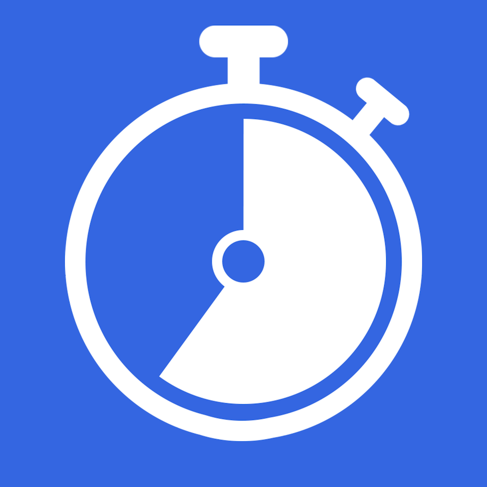
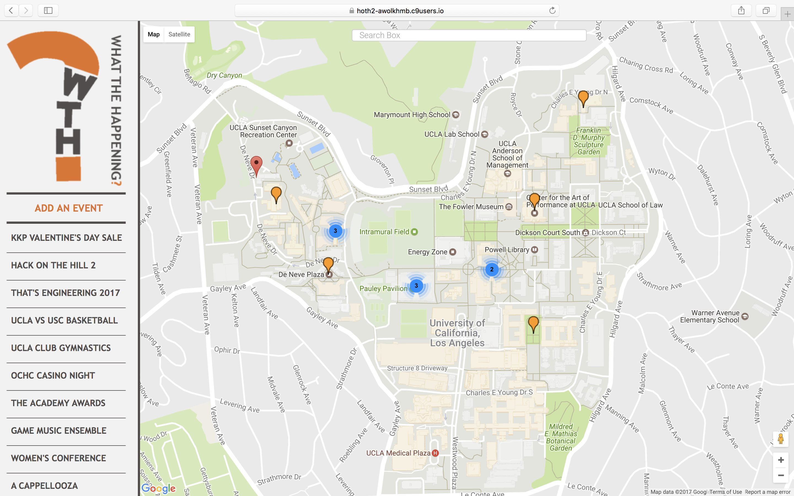
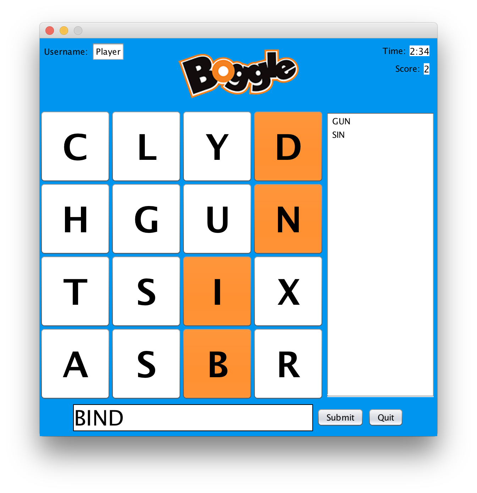

Featured Projects
OneThreeFive
Catch up on the news throughout your busy day with the OneThreeFive app. It's simple: tap the 'One', 'Three', or 'Five' button to get a news article that takes that many minutes to read. Update your preferences with your favorite news sources to filter what type of articles you will receive. Favorite articles to save them to read again later. Stay informed in just minutes! OneThreeFive is written for iOS using Firebase and Core Data as well as the Alamofire, ReadabilityKit, SwiftyJSON, and News APIs. OneThreeFive is available now on the App Store.
SEASide
SEASide is the best way to use the SEASNET linux servers at UCLA. SEASide provides a free cross platform graphical user interface that allows users to login to SEASNET. SEASide saves your username and password as well as automates the process, saving you from monotonous and unintuitive commands. SEASide creates tabs for each connection to the server and uses your custom server settings to automate the process. For each connection a file explorer is displayed to streamline navigation on the server. In addition, a terminal is emulated that securely streams commands entered by the user to the server. The terminal also displays text and special characters that are received as well as nontrivial applications like emacs and vim.
Behind the scenes, SEASide handles many techincal difficulties including automatic SSH authentication and SFTP file exploration. The terminal is also accurately emulated using cross platform libararies to maximize accessibility to the UCLA community. For our efforts, we won the First Place Overall Award at Hack on the Hill IV.

Dartboard
Dartboard is a website that aims to generate your ideal trip made especially for you. Just enter the location where you will be staying, the duration of your stay, and how long you want to spend touring each day. The site will then calculate the best places to visit every day for your entire trip, accounting for attraction ratings and travel time. Dartboard starts with a simple search or a selection from the most popular destinations and ends with a cleverly designed itinerary equipped with links to Bing Maps directions and Yelp reviews for each event of your trip. Finally, planning to travel to a foreign place is simple and stress-free. Dartboard utilizes Flask, Bootstrap, Jinja2, jQuery, Bing Maps API and Yelp API.
What The Happening
What the Happening is a web app that allows users to input and view popular events in a given area. Each event's time and description are displayed in chronological order on the left sidebar. Each event is also displayed on a live map in relation to the user's current location. The website was built with Express.js, Node.js, AngularJS, Bootstrap, and Google Maps API.
Boggle
Boggle recreates a virtual version of the classic dice game where players try to find words in sequences of adjacent letters in a limited amount of time. Compete to earn the highest score before the timer runs out. Users can customize the board size, name, and timer to match their preferences. The player can choose to either click on the interactive board or watch the letters become highlighted as they type thier words themselves. The application uses Java swing libraries for the GUI and color graphics.
